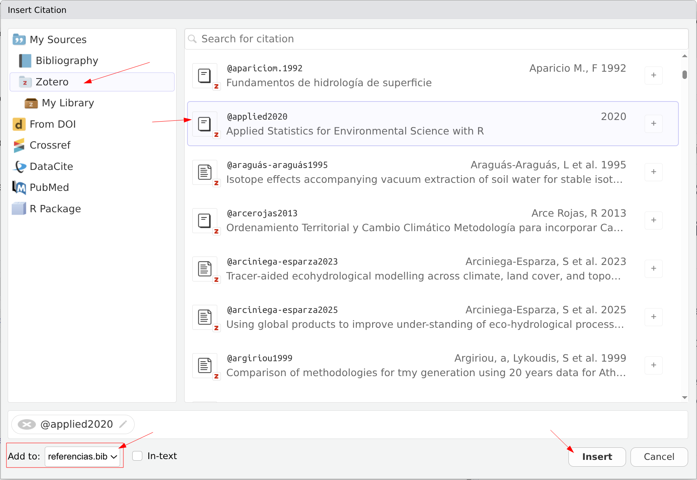

6 Citas bibliográficas
6.1 ¿Por qué automatizar las citas?
En un documento académico, las citas bibliográficas son esenciales pero también una fuente frecuente de errores:
- Citas en el texto que no aparecen en la lista de referencias (o viceversa).
- Formatos inconsistentes entre referencias.
- Renumeración manual cuando agregas o eliminas una fuente.
Quarto resuelve estos problemas: tú indicas qué citar y el sistema se encarga del cómo.
6.2 El archivo .bib
Las referencias se almacenan en un archivo de texto con extensión .bib usando el formato BibTeX. Cada entrada tiene una estructura como esta:
@article{chow1959,
title = {Open-Channel Hydraulics},
author = {Chow, Ven Te},
year = {1959},
publisher = {McGraw-Hill}
}Los elementos clave son:
- Tipo de entrada:
@article,@book,@inproceedings,@misc, etc. - Clave de citación: el identificador único (en este caso
chow1959). Es lo que usarás en el texto para citar. - Campos:
title,author,year,journal,doi, etc.
6.2.1 El archivo referencias.bib del curso
Este curso incluye un archivo referencias.bib con entradas de ejemplo. Puedes abrirlo para ver su contenido y agregar tus propias referencias.
6.3 Cómo obtener entradas BibTeX
6.3.1 Desde Google Scholar
- Busca el artículo en Google Scholar.
- Haz clic en el ícono de comillas (
") debajo del resultado. - Selecciona BibTeX en la ventana emergente.
- Copia el texto y pégalo en tu archivo
.bib.
6.3.2 Desde Zotero
Si usas Zotero (un gestor de referencias gratuito):
- Selecciona las referencias que quieres exportar.
- Click derecho > Exportar elementos…
- Elige formato BibTeX.
- Guarda como
referencias.biben la carpeta de tu proyecto.
6.3.3 Desde el DOI
Muchas herramientas en línea generan BibTeX a partir del DOI del artículo. Por ejemplo: doi2bib.org.
6.4 Gestor de referencias de RStudio.
RStudio puede ayudar a completar la información en el fichero bib a través del gestor de referencias integrado en el modo visual (Figura 6.1) y las diferentes opciones (Insert > Citation del documento en modo visual):

6.5 Conectar el archivo .bib al documento
En el encabezado YAML de tu documento, indica la ruta al archivo .bib:
---
title: "Mi informe"
author: "Tu nombre"
bibliography: referencias.bib
format: html
---En este curso, el archivo referencias.bib ya está configurado a nivel del libro en _quarto.yml, así que no se necesita agregarlo en cada documento individual.
6.6 Citar en el texto
Para insertar una cita, usa @ seguido de la clave de citación:
| Sintaxis | Resultado |
|---|---|
@chow1959 |
Chow (1959) |
[@chow1959] |
(Chow 1959) |
[@chow1959; @wickham2023] |
(Chow 1959; Wickham et al. 2019) |
[-@chow1959] |
(1959) |
Ejemplos en contexto:
- Según Chow (1959), el flujo en canales abiertos…
- El análisis de datos se realizó con R (R Core Team 2024) y el paquete tidyverse (Wickham et al. 2019).
- La metodología propuesta en (1959) ha sido ampliamente utilizada.
6.7 Lista de referencias
Quarto genera automáticamente la lista de referencias al final del documento. Solo aparecen las fuentes que efectivamente citaste en el texto.
Si quieres que la sección tenga un título personalizado, agrega al final de tu documento:
## ReferenciasQuarto insertará la lista de referencias en ese punto.
6.8 Estilos de citación (CSL)
El formato de las citas (APA, IEEE, Vancouver, etc.) se controla con un archivo CSL (Citation Style Language). Puedes especificarlo en el YAML:
---
bibliography: referencias.bib
csl: apa.csl
---Puedes descargar estilos CSL desde el repositorio de estilos de Zotero. Algunos estilos comunes:
| Estilo | Uso típico |
|---|---|
| APA | Ciencias sociales, psicología |
| IEEE | Ingeniería, electrónica |
| Vancouver | Ciencias de la salud |
| Chicago | Humanidades |
Si no especificas un CSL, Quarto usa el estilo Chicago Author-Date por defecto.
6.9 Ejemplo completo
Supongamos que tienes este contenido en referencias.bib:
@book{chow1959,
title = {Open-Channel Hydraulics},
author = {Chow, Ven Te},
year = {1959},
publisher = {McGraw-Hill}
}
@article{wickham2023,
title = {Welcome to the Tidyverse},
author = {Wickham, Hadley and others},
journal = {Journal of Open Source Software},
year = {2019},
volume = {4},
number = {43},
pages = {1686},
doi = {10.21105/joss.01686}
}Y en tu documento:
El análisis hidrológico se basó en la teoría de flujo en canales abiertos
[@chow1959]. Los datos fueron procesados usando el ecosistema tidyverse
[@wickham2023] en el lenguaje R [@r_core2024].Al renderizar, Quarto formatea las citas según el estilo elegido y genera la lista de referencias automáticamente.
6.10 Actividad autónoma
- Ve a Google Scholar y busca 3 artículos o libros relevantes para tu carrera.
- Exporta cada referencia en formato BibTeX.
- Crea un archivo
mis-referencias.bibcon las 3 entradas. - Crea un documento Quarto que:
- Tenga
bibliography: mis-referencias.biben el YAML. - Incluya al menos 3 citas en el texto (una por cada fuente).
- Use diferentes estilos de citación:
@clave,[@clave]y[@clave1; @clave2]. - Termine con una sección
## Referencias.
- Tenga
- Renderiza y verifica que la lista de referencias se genera correctamente.